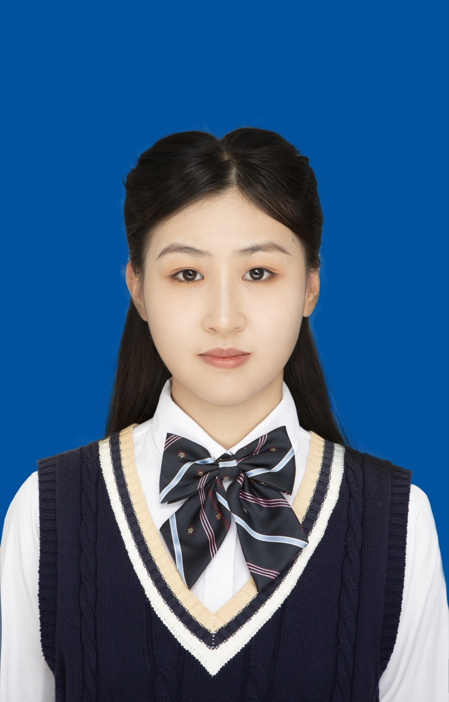

OPERATIONS & BUSINESS
赵丽蓉
ZHAO LIRONG2027 届硕士毕业生
VibecodingPythonSQLExcelPower BIAI 自动化PPT / PSCET-6

教育背景
合肥工业大学
物流工程与管理 · 硕士
- 相关课程：数理统计（100）、最优化方法（97）、工程经济学（92）、管理研究方法（87）等。
- 荣誉奖项：合肥工业大学一等学业奖学金 2 次、校三好学生。
浙江工商大学
物流管理 · 本科
- 学业成绩：成绩排名 1/87，GPA 3.91，保研至合肥工业大学物流工程与管理专业。
- 相关课程：统计学（94）、数据库原理与应用（92）、供应链管理（88）、仓储管理与库存控制（98）、运输管理（93）等。
- 荣誉奖项：优秀学生综合一等奖学金 3 次、浙江省政府奖学金 2 次、校三好学生 2 次。
实习经历
杭州认养一头牛生物科技有限公司
销售管理实习生
- 商家与分销商治理：围绕店铺巡价、破价投诉闭环与分销商专项整改推进渠道价格治理，推动 Q2 常温奶整体破价率下降 1.5%、分销渠道破价率下降 3%。
- 运营机制建设：参与建设销管飞书多维表，串联数据管理、投诉处理、整改提醒、考核确认及可视化看板，巡店效率提升 50%；开发 AI 考核名单整理工具，处理效率提升 80%。
- 经营策略分析：按周分析品牌电商、新零售及生鲜渠道价格表现，输出破价趋势与分销商整改进度，为周度考核与后续整改跟进提供数据支持。
浙江大华技术股份有限公司
渠道运营实习生
- 电商渠道运营：负责天猫分销订单全流程运营，完成合作协议签订、合同录入与审批、仓储备货、物流跟踪及订单台账维护；针对库存不足、物流延迟等异常，协调仓储、物流与商务调整交付方案。
- 需求与问题闭环：通过客户沟通与线上市场调研了解需求，结合产品功能及场景提供解决方案；跟进安装使用、退货申请、物流回收与货物检查，推动客户售后问题闭环。
杭州直行便供应链有限公司
采购管理实习生
- 商家经营支持：负责 D2C 账号全量订单供应链跟进，协助货源筛选优化、商品链接维护与货源配置调整，处理退换货及到货入库异常，推动店铺 3 天发货率稳定在85% 以上。
- 指标分析与协同：监控商家 3 天发货率、5 天到货率、仓库 7 天发货率，按订单状态、物流节点及异常类型分类排查；联动采购、仓库、商家及业务团队闭环异常，保障履约交付指标不低于 90%。
浙江工商大学管理工程与电子商务学院
学办助理
- 高任务量执行：协助处理档案归档、报告整理、材料汇总及财务报销，曾在短时间内完成 200 余份毕业档案整理，在高任务量下保证信息准确、推进有序。
- 跨部门协调：长期对接学生、教师及学院相关部门，细致核对材料并及时处理信息偏差与材料遗漏，保障事务顺利推进。
项目经历
“华为杯”研究生数学建模竞赛｜数据驱动下磁性元件的磁芯损耗建模| 队长（1/3）· 全国二等奖
- 系统分析与建模：对多源实验数据进行清洗、特征提取与预处理，结合 PCA 降维、相关性分析及交互特征构造识别影响因素；构建精确率达 98.96% 的分类模型，并通过函数拟合与多目标优化完成工况优化。
浙江省大学生物流设计大赛｜双碳背景下循环包装箱 C 端运营方案| 负责人（1/5）· 省赛二等奖
- 策略洞察与任务拆解：通过网络调研与 SWOT 分析识别循环包装箱在回收、配送及用户参与方面的运作难点，将问题拆分为配送网络、回收布局与用户激励三类任务。
- 方案设计与项目交付：运用系统仿真优化驿站与社区配送，使用 DBSCAN 聚类规划回收网络，并以演化博弈分析消费者行为、设计激励机制，形成 6.2 万余字项目报告。
OfferPath｜运营面试知识管理平台| AI 个人实践
- 产品策划与落地：针对面试资料分散、整理效率低等问题，独立完成需求拆解、产品设计与持续迭代，打通截图收集、AI 内容提取、答案优化、能力标签分类及学习进度管理流程。
岸题录 ShoreNote｜专业知识错题库| AI 个人实践
- 产品设计与迭代：针对错题分散、整理效率低及复盘困难，独立完成需求拆解、产品设计、功能开发与持续迭代，实现多格式导入、智能解析、分类归档与错题复盘。
AI Agent 驱动的自媒体运营与 SOP 自动化| AI 个人实践
- 运营 SOP 建设：结合OpenClaw、Gemini、Claude 与 Python + CDP，串联选题、AI 作图、文案生成、排版与发布，搭建端到端内容运营 SOP。
专业技能与自我评价
- 数据分析：掌握 Python、SQL、Excel、Power BI 及飞书多维表；能使用 SQL 完成查询、筛选、聚合与多表关联，运用 Excel 函数、数据透视表与图表开展指标跟踪和结构化分析。
- 电商运营：具备品牌电商、新零售、天猫分销及 D2C 业务实践，熟悉商家/分销商治理、订单履约、经营指标监控与异常闭环。
- 项目与协同：具备需求拆解、调研分析、方案设计、项目交付与持续迭代实践，能够协调采购、商家、仓储、物流、商务及业务团队推进任务。
- 语言能力：通过大学英语四、六级考试，具备较好的英语读写译能力。
- 个人特质：认真负责，沟通与执行力强；能够在高任务量下保持稳定产出，重视信息准确、细节核对与问题闭环。